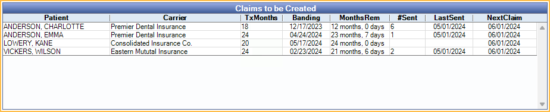

Ortho Auto Claims
Use the Ortho Auto Claims Tool to generate periodic orthodontic claims.
In the Main Menu, click Tools, Ortho Auto Claims.

Ortho Auto Claims are useful when a carrier wants a claim submitted for the initial procedure, plus periodic claims based on a set frequency (i.e., Auto Proc Period) instead of per visit.
Before setting complete the initial orthodontic treatment, make sure to review Ortho options in Preferences and the carrier's Ortho settings (Insurance Plan, Ortho tab).
Setup Requirements:
- Ortho Claim Type: Initial Plus Periodic
- A Default Auto Ortho Proc must be set up in Preferences. This can be overridden from the Insurance Plan, Ortho tab.
How it works:
- Once the initial orthodontic treatment procedure is set complete and a claim is sent, periodic claims are subsequently flagged for auto-generation based on the carrier's Auto Proc Frequency, Ortho Auto Proc, and Ortho Auto Fee.
- The initial claim is scheduled for the first day of next calendar month (e.g., 03/01/2023).
- If the setting Wait 30 days before creating first automatic claim is enabled in Insurance, Ortho tab, the first claim date will be postponed until the first day of the month at least 30 days out.
- Once the current date is at or after the NextClaim date, the patient is added to the Claims to be Created grid.
- Generate the claim using the Ortho Auto Claims Tool.
- Subsequent claim dates are determined by the Auto Proc Frequency after an Auto Ortho Claim is created (e.g., if a claim is created on 03/01/2023 and Auto Proc Frequency is quarterly, the next claim date is calculated as 06/01/2023). The NextClaim date is always calculated for the first day of the month the claim is due to be sent.
- Claims continue to be flagged for auto-generation until the total treatment time (i.e., Total Tx Time) is reached or the NextClaim date is manually removed.
Ortho Auto Claims Window
Clinic: Only appears when the Clinics feature is enabled. Select a clinic from the dropdown to filter the list by the clinic assigned to patients.
Claims to be Created Grid: Patients due to send an Auto Ortho claim for the current month or past due are listed in the grid. Click a column name to change sorting. Numerical sorting uses the same logic as alphabetical sorting (e.g., rather than sorting as 1, 5, 10, the sort order is 1, 10, 5).
- Patient: Patient last name and first name.
- Carrier: Insurance carrier a claim will be attached to.
- Tx Months: The total months elapsed that the patient has been in ortho treatment. Set up in Auto Ortho.
- Banding: Banding or ortho start date (i.e., date of the initial orthodontic procedure). Same as Date Start in Auto Ortho.
- MonthsRem: Treatment time remaining. Displayed in months and days. Based off Banding and Tx Months.
- #Sent: Total number of ortho claims sent for the carrier/patient.
- LastSent: Date of the last Ortho Auto Claim sent for the carrier/patient.
- Next Claim: Date of the next Ortho Auto Claim. This is used as the Date of Service when creating the Auto Ortho claim.
- Clinic: Only shows when Clinics feature is enabled. Clinic assigned to patient.
Generate Claims: Select patients and click to create Auto Ortho claims. See the following Generate Periodic Ortho Claims using the Ortho Auto Claims Tool section for details.
Select All: Highlight all rows (i.e., patients) in the grid.
Ortho Settings
The following Ortho preferences must be set up in order to use the Ortho Auto Claims Tool:
- Enable Show Auto Ortho in Account Module so the Auto Ortho tab shows in the Account Module and an Ortho tab shows in the Edit Insurance Plan window.
- Set the Default Ortho Auto Proc to be used on orthodontic claims that are created automatically.
- Enable Mark claims as Ortho if they have Ortho procedures so that Is Ortho is always marked on automatically generated ortho claims.
- Enable Use the first ortho procedure date as Date of Placement so that the Date of Placement is always filled on automatically generated ortho claims.
- Set Ortho Placement Procedures to determine which procedures are considered for orthodontic placement.
- Enable Consolidate Ortho Insurance Payments to force users to enter Auto Ortho payments on the initial claim. Disable this setting to allow payments to Auto Ortho claims.
- Set other defaults as needed.
Insurance Plan Settings
In the Edit Insurance window, Ortho tab, specify the carrier's claim preferences. Any changes made affect all patients using the plan.
See Insurance Plan for details.
Schedule the Patient's Initial Treatment Procedure
As usual, schedule the patient's initial treatment appointment with the corresponding orthodontic placement procedure.
- At the time of treatment, set the appointment/procedure complete. Doing so populates the next claim date for the patient based on insurance plan ortho frequency setting. This will be the date for the first Ortho Auto claim.
- Check the Auto Ortho tab to verify that dates and fees are accurate.
- Manually create and send the initial claim for the ortho placement procedure.
Generate Periodic Ortho Claims using the Ortho Auto Claims Tool
Each month, check the Ortho Auto Claims Tool to see which periodic claims are due to be sent. The next claim date is always the first of the month.
Claims that meet the following criteria are listed in the Claims to be Created grid:
- Patient insurance plan is set to Initial Plus Periodic.
- The initial ortho treatment procedure has been set complete.
- The next claim date is today or prior.
To create Ortho Auto Claims:
- Select the claims to automatically generate.
- Highlight specific claims to generate.
- Optionally filter claims by clinic using the Clinic dropdown.
- Click Select All to select all claims.
- Click Generate Claims. A confirmation message is shown. Click Yes to continue.
- Another message indicates when the process is complete and the number of claims generated. Click OK to close the message.
Close the Auto Ortho Claims window, then view the Account Module. Claims are created with the Waiting to Send status. Created claims can be viewed or sent for an individual patient from the Account Module. Multiple claims can be sent from the Manage Module, Send Claims. The Auto Proc Code in the claim (e.g., D8670.auto) is also charted to the patient's account.
Determining the Next Ortho Claim
There are two places to view when a patient's next ortho claim is flagged for generation with the Ortho Auto Claims Tool.
- Account Module: Auto Ortho tab, Next Claim. Double-click to open the Ortho Patient Setup window.
- Family Module: Double-click the insurance plan, then click the Ortho button in the Patient Information area.

The Next Claim Date is automatically updated each time the Ortho Auto Tool creates a claim. Manually change or clear the date from the Ortho Patient Setup window. This can be useful if a periodic claim needs to be skipped or claims need to be stopped altogether.
A few hints:
- The date is always for the first of any given month, so even if a user enters 3/15/2023 the date saved is 3/1/2023.
- To stop auto-generated claims, leave the next claim date blank. There will be no next claim when this field is blank.
- Once a date is manually set, the date does not auto-update until the next auto-generation of a claim.
Providers on Claims
The treating provider on the claim depends on the billing provider for the practice.
- If the treating provider (the provider on the procedure) matches the billing provider, then the treating provider on the claim is the same.
- If the treating provider (the provider on the procedure) is different than the billing provider, then patient's default primary provider is set as the treating provider on the claim.
Claim Payments
When generating Auto Ortho claims, consider where claim payments should be entered: on the initial procedure's claim or on the auto-generated claim.
To only allow staff to enter claim payments on the initial procedure's claim, enable the preference, Consolidate Ortho Insurance Payments. Installment payments can be entered as Supplemental Insurance Payments on the original claim and auto-generated claims can be received as zero payment.